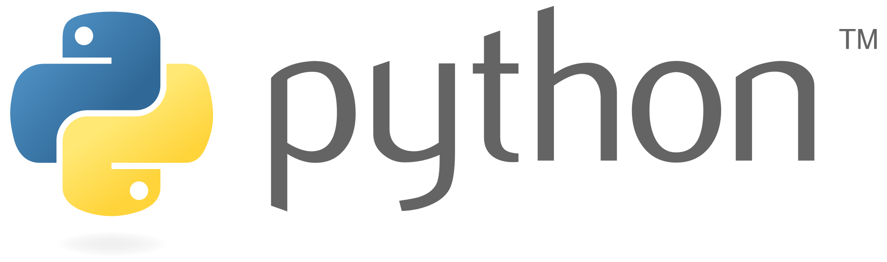
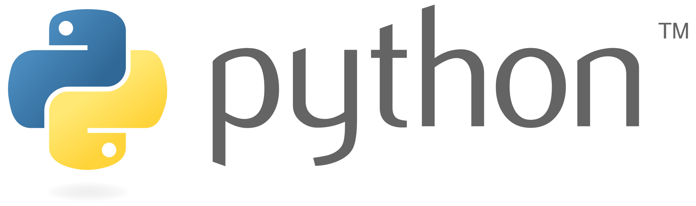
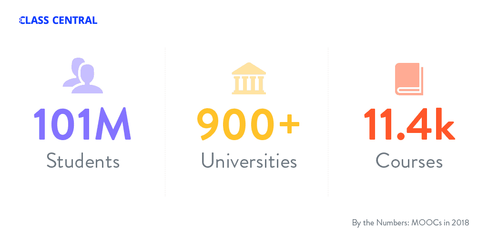
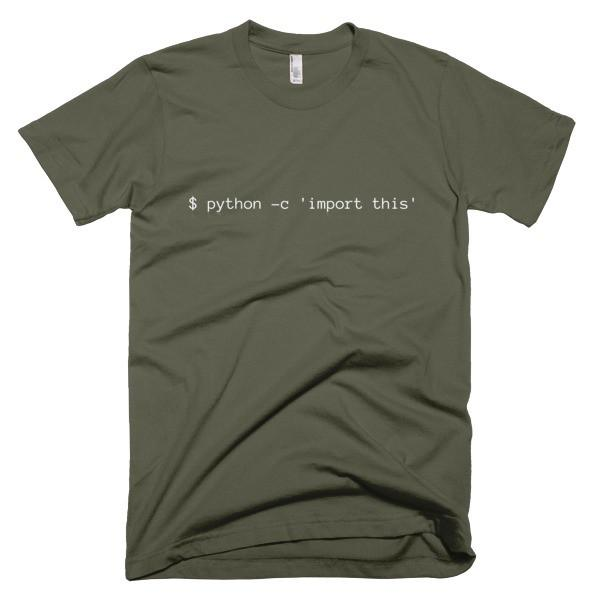

The democratization of knowledge, information, data, ...
Diego Sandoval
Kigali, 2019
The New Instrument. Francis Bacon, 1620
Knowledge is power
Source: Harari, sapiens
Image Source: Wikipedia
Leviathan. Thomas Hobbes, 1668
Knowledge is power
Source: Wikipedia
The freedom to run the program as you wish, for any purpose (freedom 0).
The freedom to study how the program works, and change it so it does your computing as you wish (freedom 1). Access to the source code is a precondition for this.
The freedom to redistribute copies so you can help your neighbor (freedom 2).
The freedom to distribute copies of your modified versions to others (freedom 3). By doing this you can give the whole community a chance to benefit from your changes. Access to the source code is a precondition for this.
 


| Project | Leading Company | Value |
|---|---|---|
| Linux | Red Hat | $16 billion |
| Git | Github | $2 billion |
| MySQL | Oracle | $1.87 billion |
| Docker | Docker | $1 billion |
| Spark | Databricks | $513 million |
Source: Wikipedia
Break!
Open knowledge
Wikipedia
MOOCs
Massive open online course
MOOCs
Harvard, Introduction to Computer Science CS50
[CS50](https://www.edx.org/course/cs50s-introduction-computer-science-harvardx-cs50x)

long long time; //ago in a galaxy far away...
Examples
Learning German
| Butterfly | der Schmetterling |
| die Rechtsschutzversicherungsgesellschaft | Insurance company providing legal protection |
| to go | gehen, geht, ist gegangen |
Examples
How Python and LaTeX can save your life?Example
Portfolio screening


Read other people's code

The Zen of Python, by Tim Peters
The Zen of Python, by Tim Peters
Beautiful is better than ugly.
Explicit is better than implicit.
Simple is better than complex.
Complex is better than complicated.
Flat is better than nested.
Sparse is better than dense.
Readability counts.
Special cases aren't special enough to break the rules.
Although practicality beats purity.
Errors should never pass silently.
Unless explicitly silenced.
In the face of ambiguity, refuse the temptation to guess.
There should be one-- and preferably only one --obvious way to do it.
Although that way may not be obvious at first unless you're Dutch.
Now is better than never.
Although never is often better than *right* now.
If the implementation is hard to explain, it's a bad idea.
If the implementation is easy to explain, it may be a good idea.
Namespaces are one honking great idea -- let's do more of those!